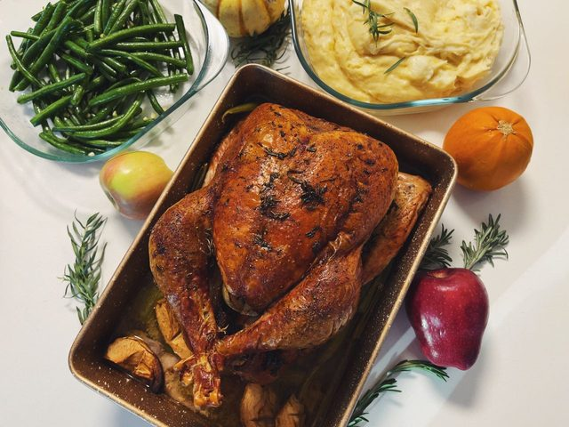

VOCABULARY · 主題 2000 字 PART 2 UNIT 22
Holidays & festivals．節日與慶典
台灣和西方的節日，還有文化、習俗、燈籠和回憶，共 16 個。節日名稱每個字的第一個字母大寫；「在某個節日」用 on（on Mother's Day）。
共 16 個單字．點 🔊 聽發音

1Chinese New Yearn.
農曆新年；春節
at／during Chinese New Year
Kids get red envelopes at Chinese New Year.過年時小孩會拿到紅包。

2New Year's Even.
除夕；跨年夜
Eve 前夕
We watch fireworks on New Year's Eve.我們在跨年夜看煙火。

3Double Tenth Dayn.
雙十節；國慶日
十月十日
Double Tenth Day is Taiwan's National Day.雙十節是台灣的國慶日。

4Dragon Boat Festivaln.
端午節
農曆五月五日
We watch dragon boat races at the Dragon Boat Festival.端午節我們看龍舟比賽。

5Lantern Festivaln.
元宵節
農曆一月十五日
People eat sweet dumplings at the Lantern Festival.元宵節大家吃湯圓。

6Moon Festivaln.
中秋節
= Mid-Autumn Festival
Families eat moon cakes and pomelos at the Moon Festival.中秋節家人一起吃月餅和柚子。

7Teacher's Dayn.
教師節
九月二十八日（孔子誕辰）
We made cards for our teachers on Teacher's Day.教師節我們做卡片送老師。

8New Year's Dayn.
元旦
一月一日
New Year's Day is January 1st.元旦是一月一日。

9Mother's Dayn.
母親節
五月第二個星期日
I made breakfast for Mom on Mother's Day.母親節我幫媽媽做早餐。

10Father's Dayn.
父親節
台灣是八月八日
We took Dad out to dinner on Father's Day.父親節我們帶爸爸出去吃晚餐。

11Thanksgivingn.
感恩節
美國：十一月第四個星期四
Americans eat turkey on Thanksgiving.美國人感恩節吃火雞。

12Valentine's Dayn.
情人節
二月十四日
He gave her chocolate on Valentine's Day.情人節他送她巧克力。

13culturen.
文化
cultural 文化的
I want to learn more about Japanese culture.我想多了解日本文化。
14customn.
習俗；風俗
customs 海關（複數）
Giving red envelopes is a Chinese New Year custom.發紅包是過年的習俗。

15lanternn.
燈籠
Lantern Festival 元宵節
The kids carried paper lanterns at night.孩子們晚上提著紙燈籠。
16memoryn.
記憶；回憶
複數 memories；memorize 背誦
I have many happy memories of my childhood.我有很多快樂的童年回憶。
FOCUS
節日在哪一天
| 節日 | 時間 |
|---|---|
| Chinese New Year | 農曆一月一日 |
| Lantern Festival | 農曆一月十五日 |
| Dragon Boat Festival | 農曆五月五日 |
| Moon Festival | 農曆八月十五日 |
| Double Tenth Day | 十月十日 |
「在某節日當天」用 on：on Mother's Day、on Valentine's Day。